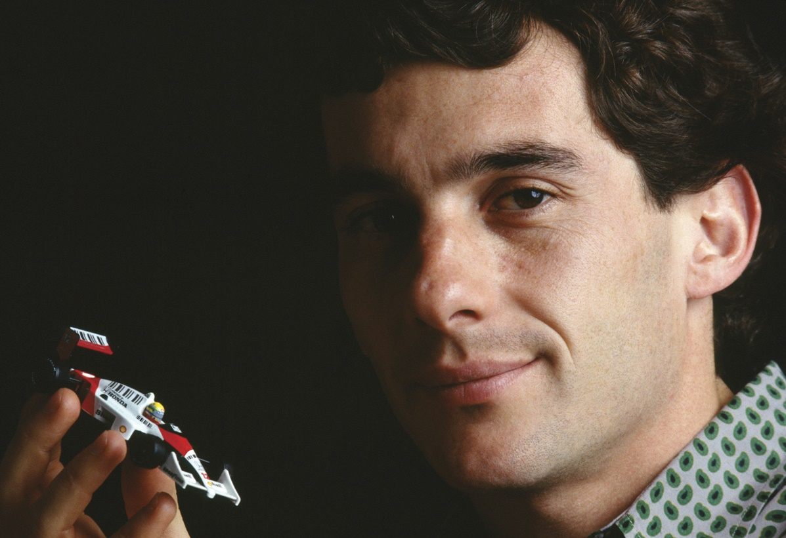
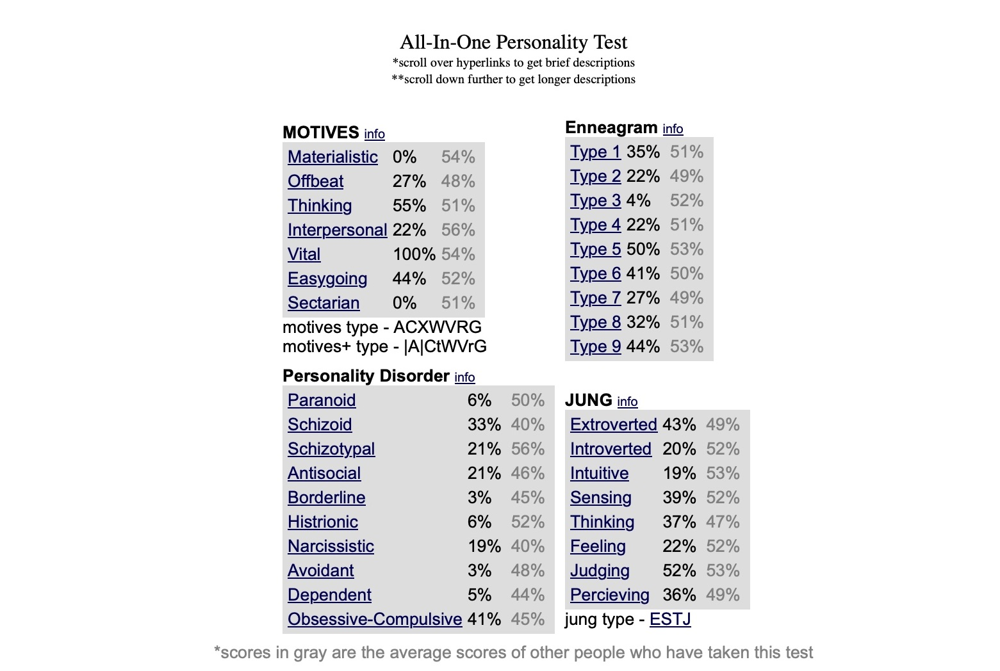

Organized: Being organized helps me prioritize assignments, set deadlines, and allocate my time effectively.
Trustworthiness: Being trustworthy ensures fair assessments, earns respect from my peers and instructors, and makes me dependable in fulfilling my promises and obligations.
Emotions
Gratefulness: This gratitude impacts my academic life because it acts as an extra motivation for me to do my best academically, knowing how hard my parents work to support me financially.
Admiration: Admiring my peers and colleagues is a great way to foster a collaborative spirit, it is much easier to cooperate and collaborate with them, leading to positive social interactions.
Hobbies
Watching Sports:
It's a great way to unwind and relax after a long school day.
The excitement and drama of a game can help me forget about my anxieties and take a break from the stress of academic life.
It is also a source of motivation as seeing these athletes achieve their dreams can motivate me to work harder and believe in myself.
Reading:By reading well-written texts, I'm exposed to models of good structure and vocabulary,that I can apply to my own academic writing.
Favourite Scenes
When I went with some friends to an Escape Room and an Arcade.
Hero/Mentor

“With regard to performance, commitment, effort, dedication, there is no middle ground.
you do something very well or not at all." - Aryton Senna
Who is Aryton Senna?
Ayrton Senna was a legendary Formula 1 driver from São Paulo, Brazil.
Renowned for both his driving skills and his commanding use of language.
Won three Formula 1 World Championships in 1988, 1990, and 1991.
Tragically died at age 34 in a fatal accident during the 1994 San Marino Grand Prix.
His legacy endures through both his motorsport achievements and philanthropy.
The Ayrton Senna Institute supports underprivileged children in Brazil.
Reasons why Aryton Senna is my Mentor:
His unwavering commitment to excellence.
His ability to overcome adversity in both his career and life.
His humanitarian work and dedication to making a positive impact is an inspiration.
These attributes are ones I aspire to emulate in my own life.
My Online Personality Test Result

Personality Test Reflection
The test, in general, doesn't seem valid.
In my case, it was invalid due to vague questions and failer to consider context or environment.